Slide 1Batteries &
Power Electronics
A robotics class review
Tool batteries · FIRST robotics · transformers · rectifiers · buck converters · USB PD
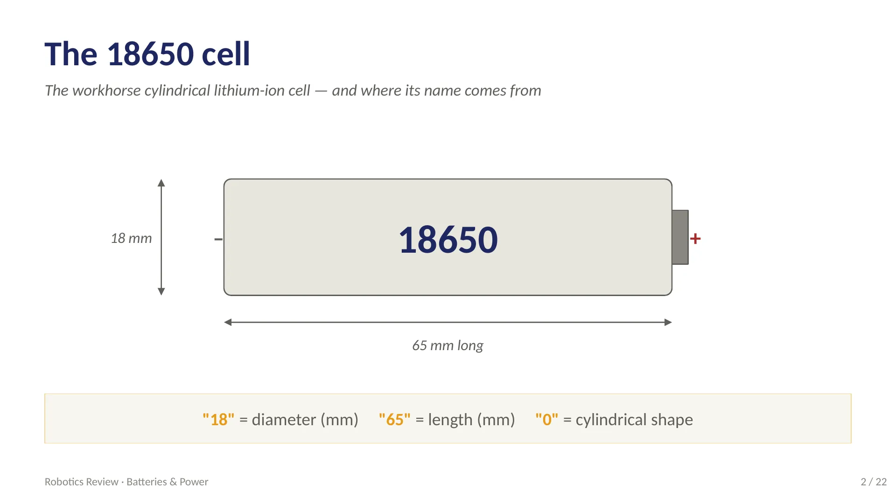
Slide 2The 18650 cell
The workhorse cylindrical lithium-ion cell — and where its name comes from
–
+
18650
65 mm long
18 mm
"18" = diameter (mm) "65" = length (mm) "0" = cylindrical shape
2 / 22
Robotics Review · Batteries & Power
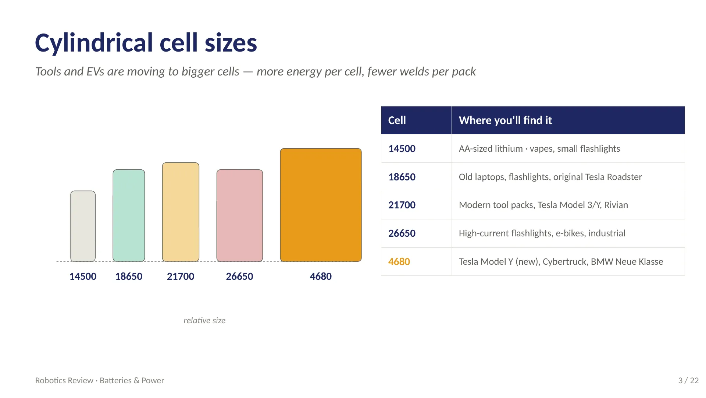
Slide 3Cylindrical cell sizes
Tools and EVs are moving to bigger cells — more energy per cell, fewer welds per pack
14500
18650
21700
26650
4680
relative size
Cell
Where you'll find it
14500
AA-sized lithium · vapes, small flashlights
18650
Old laptops, flashlights, original Tesla Roadster
21700
Modern tool packs, Tesla Model 3/Y, Rivian
26650
High-current flashlights, e-bikes, industrial
4680
Tesla Model Y (new), Cybertruck, BMW Neue Klasse
3 / 22
Robotics Review · Batteries & Power
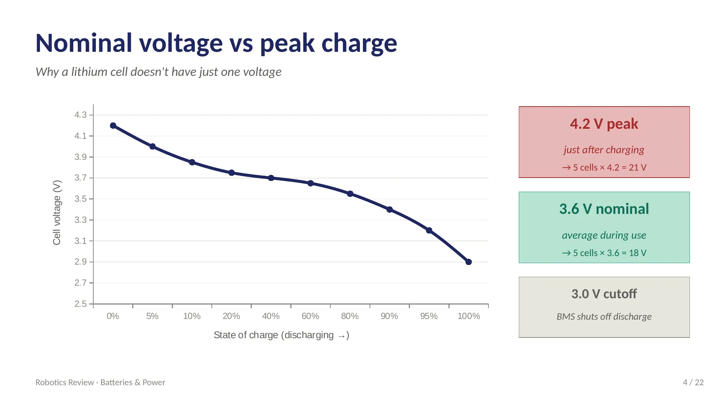
Slide 4Nominal voltage vs peak charge
Why a lithium cell doesn't have just one voltage
4.2 V peak
just after charging
→ 5 cells × 4.2 = 21 V
3.6 V nominal
average during use
→ 5 cells × 3.6 = 18 V
3.0 V cutoff
BMS shuts off discharge
4 / 22
Robotics Review · Batteries & Power
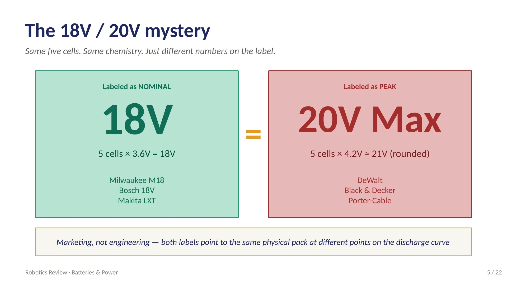
Slide 5The 18V / 20V mystery
Same five cells. Same chemistry. Just different numbers on the label.
Labeled as NOMINAL
18V
5 cells × 3.6V = 18V
Milwaukee M18
Bosch 18V
Makita LXT
=
Labeled as PEAK
20V Max
5 cells × 4.2V ≈ 21V (rounded)
DeWalt
Black & Decker
Porter-Cable
Marketing, not engineering — both labels point to the same physical pack at different points on the discharge curve
5 / 22
Robotics Review · Batteries & Power
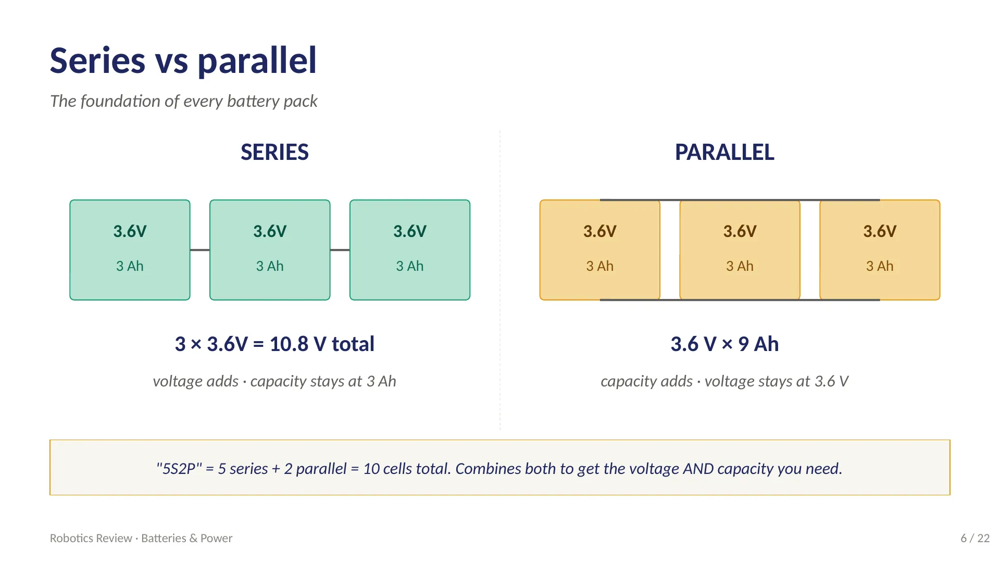
Slide 6Series vs parallel
The foundation of every battery pack
SERIES
3.6V
3 Ah
3.6V
3 Ah
3.6V
3 Ah
3 × 3.6V = 10.8 V total
voltage adds · capacity stays at 3 Ah
PARALLEL
3.6V
3 Ah
3.6V
3 Ah
3.6V
3 Ah
3.6 V × 9 Ah
capacity adds · voltage stays at 3.6 V
"5S2P" = 5 series + 2 parallel = 10 cells total. Combines both to get the voltage AND capacity you need.
6 / 22
Robotics Review · Batteries & Power
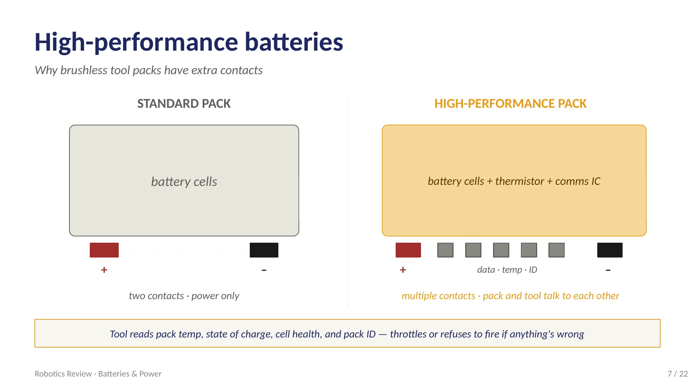
Slide 7High-performance batteries
Why brushless tool packs have extra contacts
STANDARD PACK
battery cells
+
–
two contacts · power only
HIGH-PERFORMANCE PACK
battery cells + thermistor + comms IC
+
data · temp · ID
–
multiple contacts · pack and tool talk to each other
Tool reads pack temp, state of charge, cell health, and pack ID — throttles or refuses to fire if anything's wrong
7 / 22
Robotics Review · Batteries & Power
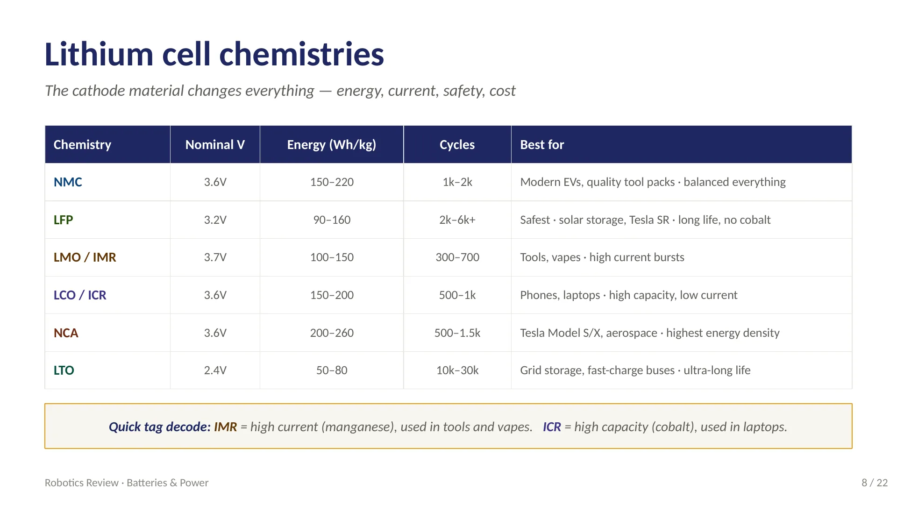
Slide 8Lithium cell chemistries
The cathode material changes everything — energy, current, safety, cost
Chemistry
Nominal V
Energy (Wh/kg)
Cycles
Best for
NMC
3.6V
150–220
1k–2k
Modern EVs, quality tool packs · balanced everything
LFP
3.2V
90–160
2k–6k+
Safest · solar storage, Tesla SR · long life, no cobalt
LMO / IMR
3.7V
100–150
300–700
Tools, vapes · high current bursts
LCO / ICR
3.6V
150–200
500–1k
Phones, laptops · high capacity, low current
NCA
3.6V
200–260
500–1.5k
Tesla Model S/X, aerospace · highest energy density
LTO
2.4V
50–80
10k–30k
Grid storage, fast-charge buses · ultra-long life
Quick tag decode: IMR = high current (manganese), used in tools and vapes. ICR = high capacity (cobalt), used in laptops.
8 / 22
Robotics Review · Batteries & Power
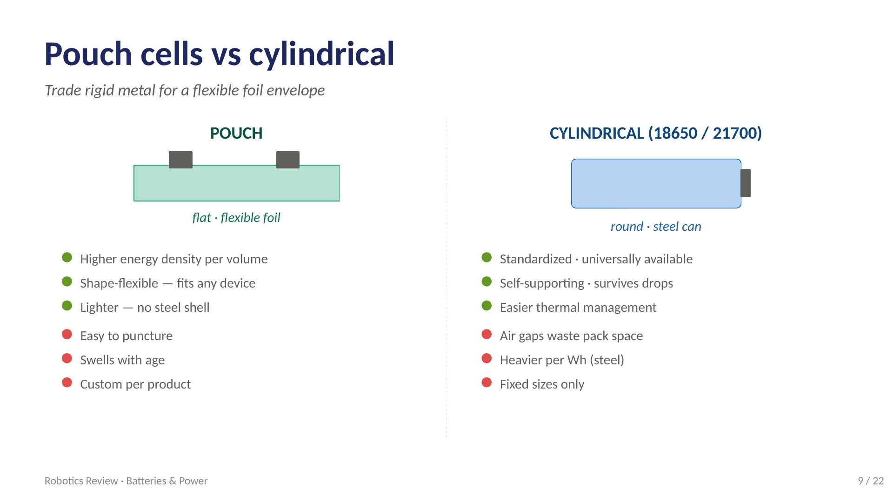
Slide 9Pouch cells vs cylindrical
Trade rigid metal for a flexible foil envelope
POUCH
flat · flexible foil
Higher energy density per volume
Shape-flexible — fits any device
Lighter — no steel shell
Easy to puncture
Swells with age
Custom per product
CYLINDRICAL (18650 / 21700)
round · steel can
Standardized · universally available
Self-supporting · survives drops
Easier thermal management
Air gaps waste pack space
Heavier per Wh (steel)
Fixed sizes only
9 / 22
Robotics Review · Batteries & Power
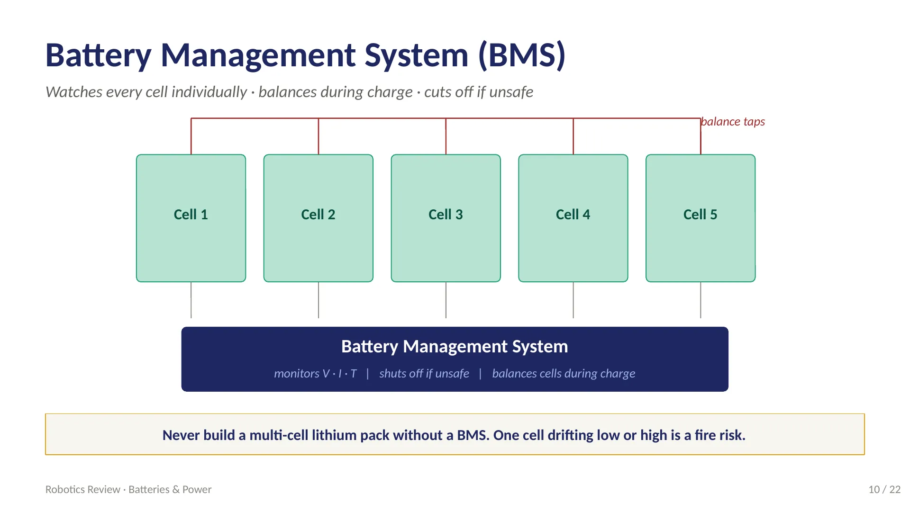
Slide 10Battery Management System (BMS)
Watches every cell individually · balances during charge · cuts off if unsafe
Cell 1
Cell 2
Cell 3
Cell 4
Cell 5
balance taps
Battery Management System
monitors V · I · T | shuts off if unsafe | balances cells during charge
Never build a multi-cell lithium pack without a BMS. One cell drifting low or high is a fire risk.
10 / 22
Robotics Review · Batteries & Power
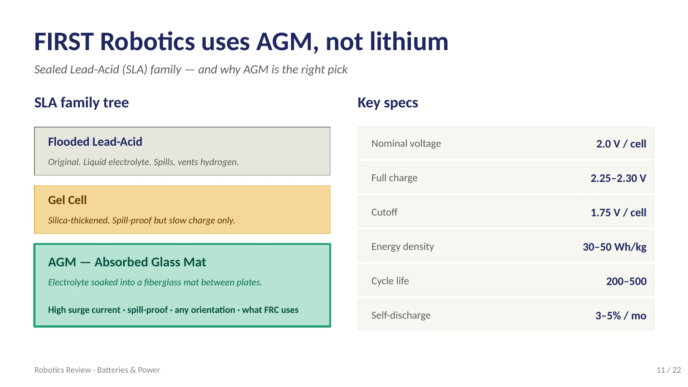
Slide 11FIRST Robotics uses AGM, not lithium
Sealed Lead-Acid (SLA) family — and why AGM is the right pick
SLA family tree
Flooded Lead-Acid
Original. Liquid electrolyte. Spills, vents hydrogen.
Gel Cell
Silica-thickened. Spill-proof but slow charge only.
AGM — Absorbed Glass Mat
Electrolyte soaked into a fiberglass mat between plates.
High surge current · spill-proof · any orientation · what FRC uses
Key specs
Nominal voltage
2.0 V / cell
Full charge
2.25–2.30 V
Cutoff
1.75 V / cell
Energy density
30–50 Wh/kg
Cycle life
200–500
Self-discharge
3–5% / mo
11 / 22
Robotics Review · Batteries & Power
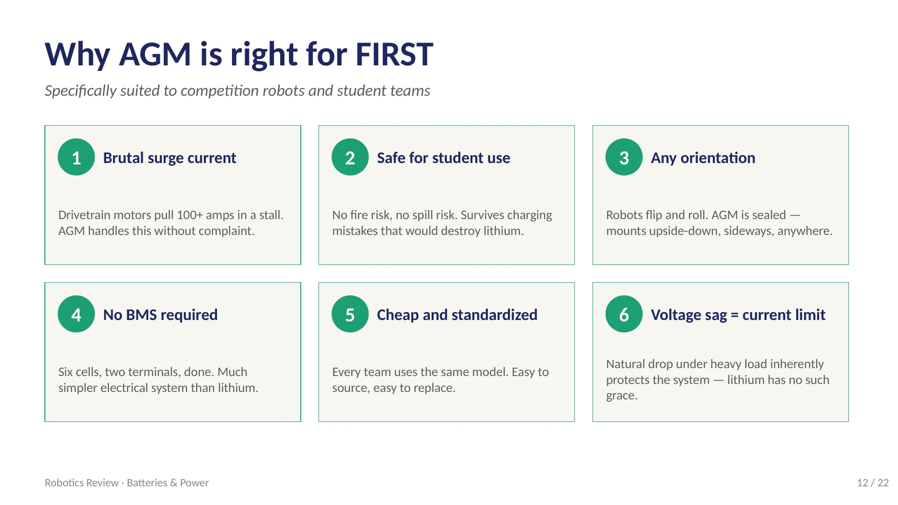
Slide 12Why AGM is right for FIRST
Specifically suited to competition robots and student teams
1
Brutal surge current
Drivetrain motors pull 100+ amps in a stall. AGM handles this without complaint.
2
Safe for student use
No fire risk, no spill risk. Survives charging mistakes that would destroy lithium.
3
Any orientation
Robots flip and roll. AGM is sealed — mounts upside-down, sideways, anywhere.
4
No BMS required
Six cells, two terminals, done. Much simpler electrical system than lithium.
5
Cheap and standardized
Every team uses the same model. Easy to source, easy to replace.
6
Voltage sag = current limit
Natural drop under heavy load inherently protects the system — lithium has no such grace.
12 / 22
Robotics Review · Batteries & Power
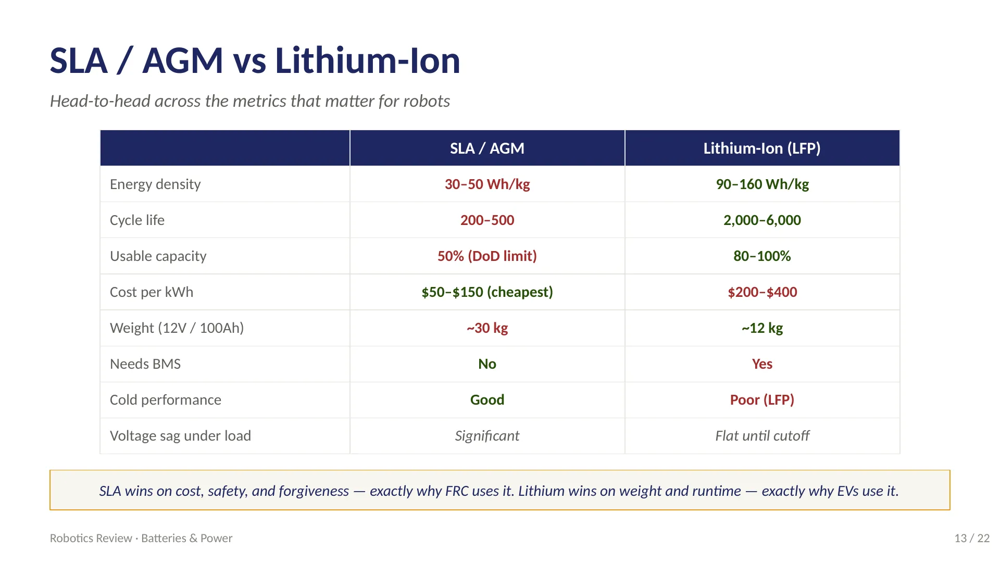
Slide 13SLA / AGM vs Lithium-Ion
Head-to-head across the metrics that matter for robots
SLA / AGM
Lithium-Ion (LFP)
Energy density
30–50 Wh/kg
90–160 Wh/kg
Cycle life
200–500
2,000–6,000
Usable capacity
50% (DoD limit)
80–100%
Cost per kWh
$50–$150 (cheapest)
$200–$400
Weight (12V / 100Ah)
~30 kg
~12 kg
Needs BMS
No
Yes
Cold performance
Good
Poor (LFP)
Voltage sag under load
Significant
Flat until cutoff
SLA wins on cost, safety, and forgiveness — exactly why FRC uses it. Lithium wins on weight and runtime — exactly why EVs use it.
13 / 22
Robotics Review · Batteries & Power
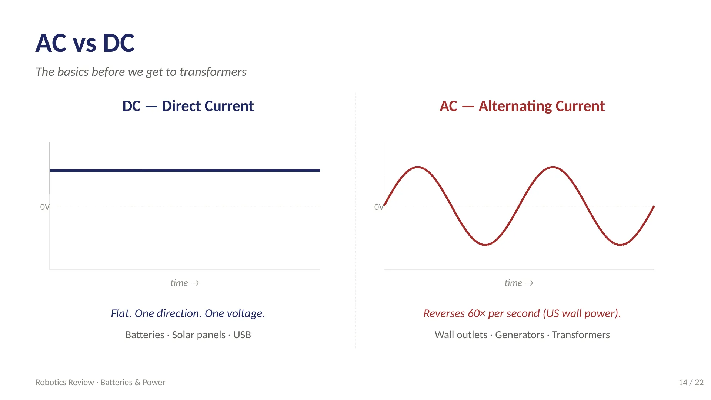
Slide 14AC vs DC
The basics before we get to transformers
DC — Direct Current
0V
time →
Flat. One direction. One voltage.
Batteries · Solar panels · USB
AC — Alternating Current
0V
time →
Reverses 60× per second (US wall power).
Wall outlets · Generators · Transformers
14 / 22
Robotics Review · Batteries & Power
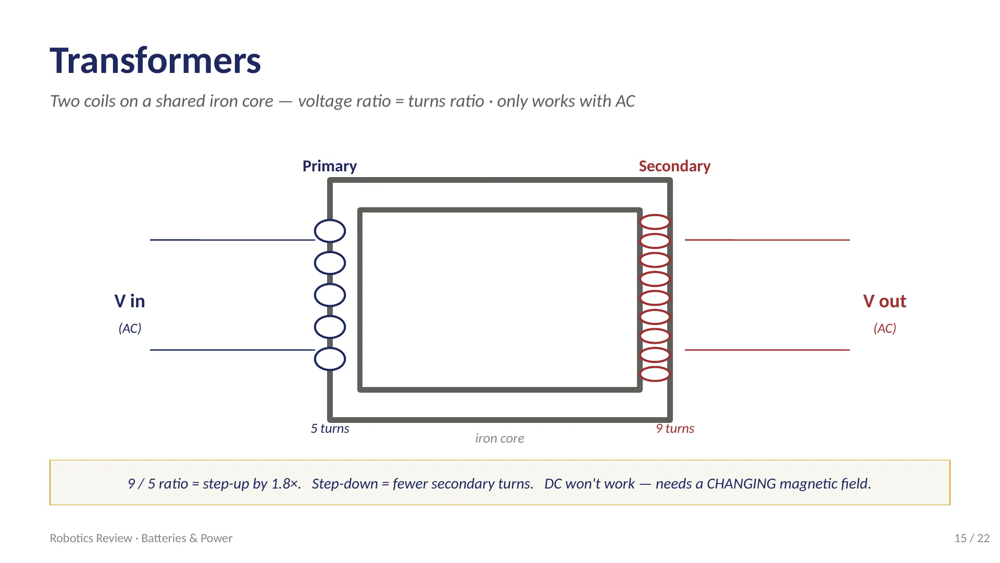
Slide 15Transformers
Two coils on a shared iron core — voltage ratio = turns ratio · only works with AC
iron core
Primary
5 turns
Secondary
9 turns
V in
(AC)
V out
(AC)
9 / 5 ratio = step-up by 1.8×. Step-down = fewer secondary turns. DC won't work — needs a CHANGING magnetic field.
15 / 22
Robotics Review · Batteries & Power
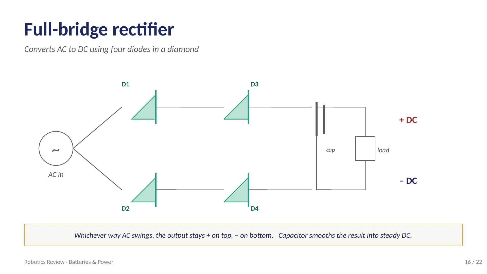
Slide 16Full-bridge rectifier
Converts AC to DC using four diodes in a diamond
~
AC in
D1
D2
D3
D4
cap
load
+ DC
– DC
Whichever way AC swings, the output stays + on top, – on bottom. Capacitor smooths the result into steady DC.
16 / 22
Robotics Review · Batteries & Power
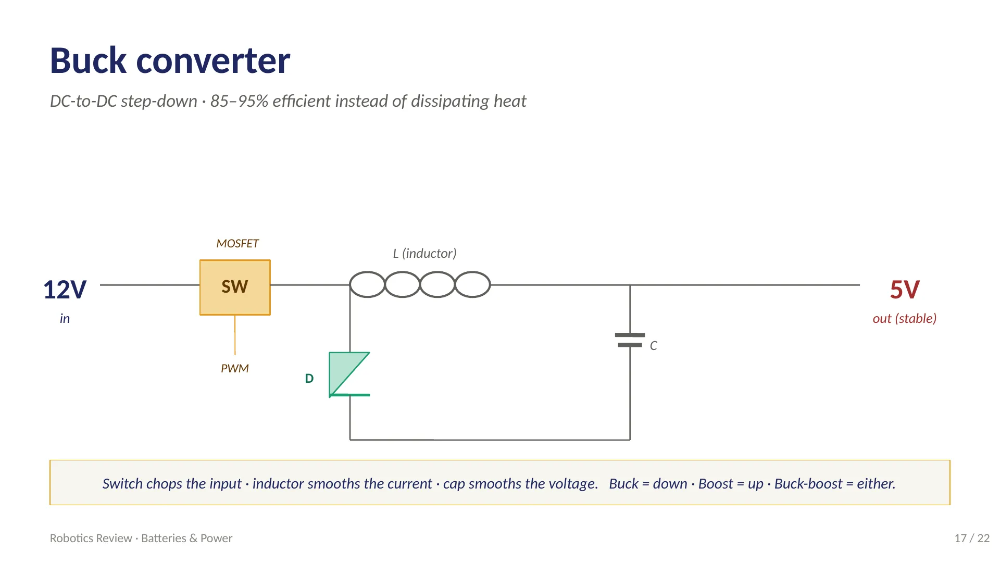
Slide 17Buck converter
DC-to-DC step-down · 85–95% efficient instead of dissipating heat
12V
in
SW
MOSFET
PWM
L (inductor)
D
C
5V
out (stable)
Switch chops the input · inductor smooths the current · cap smooths the voltage. Buck = down · Boost = up · Buck-boost = either.
17 / 22
Robotics Review · Batteries & Power
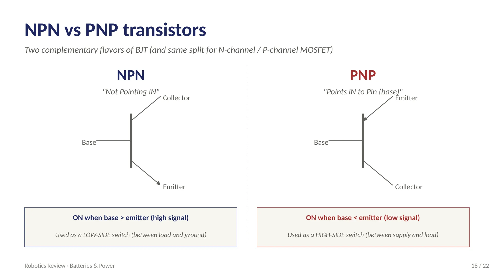
Slide 18NPN vs PNP transistors
Two complementary flavors of BJT (and same split for N-channel / P-channel MOSFET)
NPN
"Not Pointing iN"
Base
Collector
Emitter
ON when base > emitter (high signal)
Used as a LOW-SIDE switch (between load and ground)
PNP
"Points iN to Pin (base)"
Base
Emitter
Collector
ON when base < emitter (low signal)
Used as a HIGH-SIDE switch (between supply and load)
18 / 22
Robotics Review · Batteries & Power
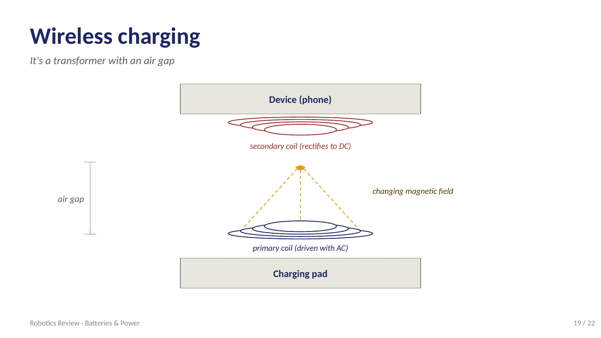
Slide 19Wireless charging
It's a transformer with an air gap
Device (phone)
secondary coil (rectifies to DC)
air gap
changing magnetic field
primary coil (driven with AC)
Charging pad
19 / 22
Robotics Review · Batteries & Power
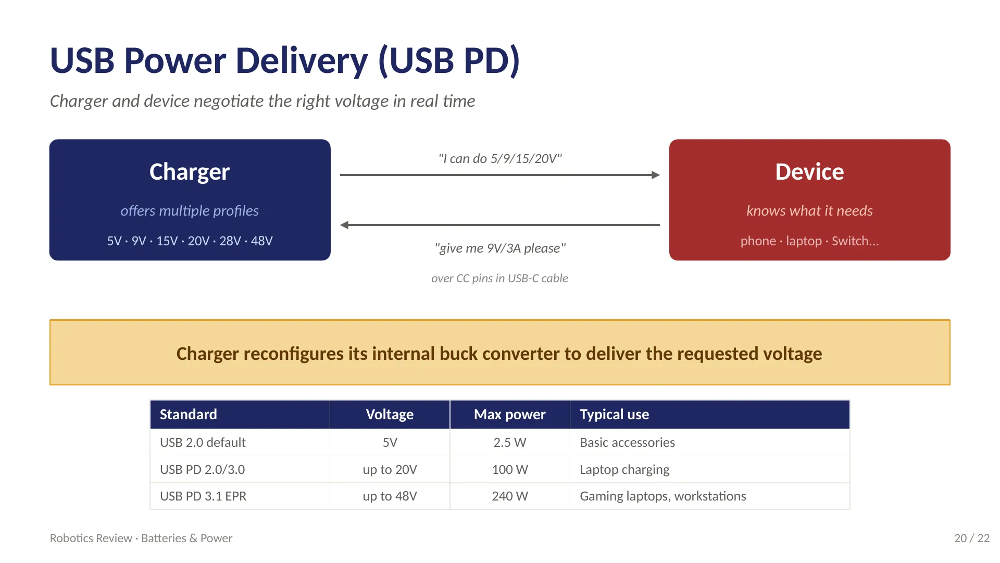
Slide 20USB Power Delivery (USB PD)
Charger and device negotiate the right voltage in real time
Charger
offers multiple profiles
5V · 9V · 15V · 20V · 28V · 48V
Device
knows what it needs
phone · laptop · Switch...
"I can do 5/9/15/20V"
"give me 9V/3A please"
over CC pins in USB-C cable
Charger reconfigures its internal buck converter to deliver the requested voltage
Standard
Voltage
Max power
Typical use
USB 2.0 default
5V
2.5 W
Basic accessories
USB PD 2.0/3.0
up to 20V
100 W
Laptop charging
USB PD 3.1 EPR
up to 48V
240 W
Gaming laptops, workstations
20 / 22
Robotics Review · Batteries & Power
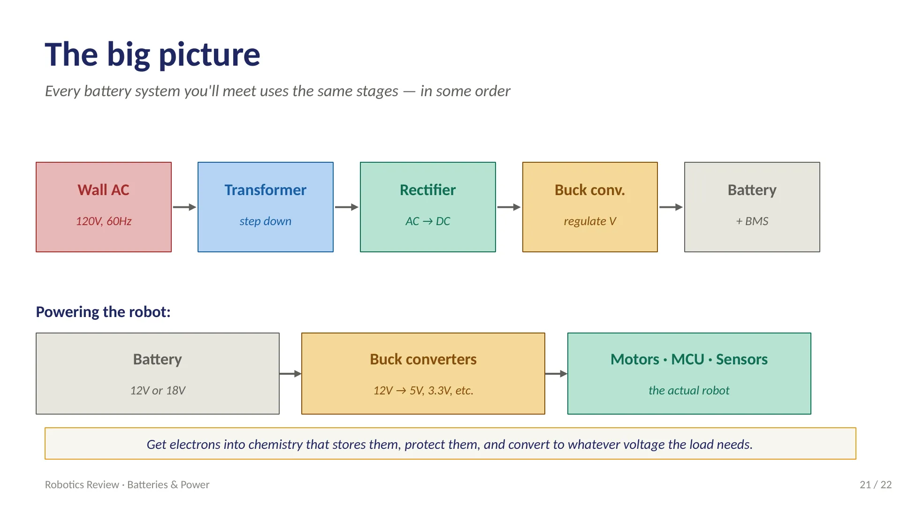
Slide 21The big picture
Every battery system you'll meet uses the same stages — in some order
Wall AC
120V, 60Hz
Transformer
step down
Rectifier
AC → DC
Buck conv.
regulate V
Battery
+ BMS
Powering the robot:
Battery
12V or 18V
Buck converters
12V → 5V, 3.3V, etc.
Motors · MCU · Sensors
the actual robot
Get electrons into chemistry that stores them, protect them, and convert to whatever voltage the load needs.
21 / 22
Robotics Review · Batteries & Power
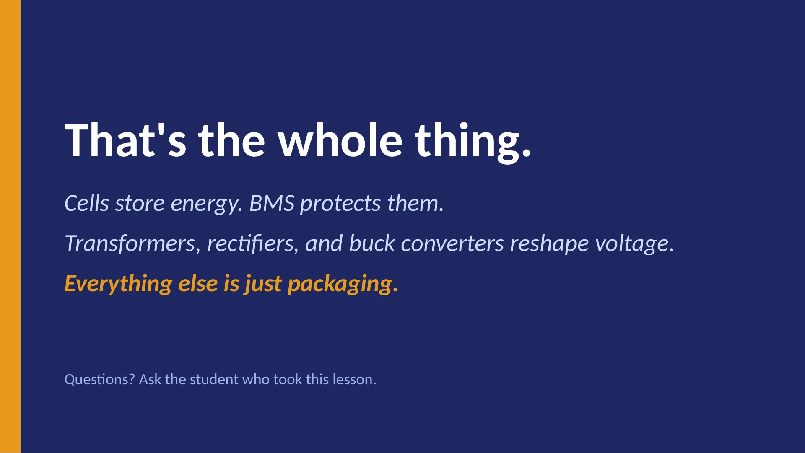
Slide 22That's the whole thing.
Cells store energy. BMS protects them.
Transformers, rectifiers, and buck converters reshape voltage.
Everything else is just packaging.
Questions? Ask the student who took this lesson.